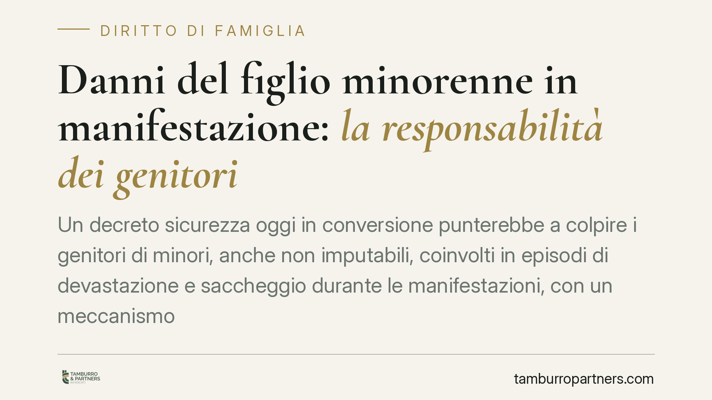

Danni del figlio minorenne in manifestazione: la responsabilità dei genitori
Un decreto sicurezza oggi in conversione punterebbe a colpire i genitori di minori, anche non imputabili, coinvolti in episodi di devastazione e saccheggio durante le manifestazioni, con un meccanismo di risarcimento accelerato ai danneggiati. La misura si innesta su regole civili e penali già esistenti. Facciamo chiarezza, distinguendo ciò che è certo da ciò che resta allo stato di proposta.

Il fatto e perché conta
È attualmente in fase di conversione un provvedimento in materia di sicurezza che, nelle bozze diffuse, prevedrebbe una sanzione amministrativa a carico dei genitori di minori coinvolti in reati di devastazione e saccheggio commessi nel corso di manifestazioni. La norma riguarderebbe anche i minori non imputabili e introdurrebbe un canale di risarcimento accelerato in favore dei soggetti danneggiati, attivabile tramite ordinanza del Prefetto.
Precisiamo subito un punto essenziale: il testo non è ancora legge. I riferimenti circolati vanno trattati con cautela e la portata definitiva dipenderà dalla pubblicazione del decreto convertito. Nel seguito distinguiamo ciò che è già diritto vigente da ciò che è, per ora, soltanto proposta.
Inquadramento normativo: penale e civile sono due piani distinti
Sul piano penale valgono gli artt. 97 e 98 del codice penale. Il minore di quattordici anni (infraquattordicenne) non è imputabile in modo assoluto: non risponde penalmente del reato, in nessun caso. Tra i quattordici e i diciotto anni, invece, la responsabilità penale sussiste solo se il giudice riconosce la capacità di intendere e di volere al momento del fatto.
Sul piano civile il quadro è diverso. L'art. 2048 del codice civile stabilisce che i genitori rispondono dei danni causati dai figli minori che convivono con loro. Questa responsabilità è autonoma rispetto a quella penale del figlio: anche se il minore non è imputabile penalmente, i genitori possono essere chiamati a risarcire il danno in sede civile.
Il fondamento è la cosiddetta culpa in educando e culpa in vigilando: si presume cioè che il danno sia dipeso da un difetto di educazione impartita al minore o da una carenza di sorveglianza. La Cassazione civile interpreta questa presunzione in modo rigoroso.
Responsabilità dei genitori: cosa cambierebbe in concreto
La novità del decreto in conversione, se confermata, non sostituirebbe queste regole ma ne aggiungerebbe una ulteriore: una sanzione amministrativa pecuniaria diretta a carico dei genitori, accompagnata da una procedura più rapida per ristorare i danneggiati.
Il meccanismo dell'ordinanza prefettizia per il risarcimento accelerato, pur citato nelle bozze, non è ancora verificabile nel suo funzionamento definitivo. In linea teorica consentirebbe al privato danneggiato di ottenere un titolo per il ristoro senza attendere i tempi ordinari del giudizio civile. Ma è proprio questo il profilo che richiederà la massima attenzione in sede di conversione, per i riflessi sulle garanzie di difesa dei genitori.
La prova liberatoria resta la chiave
Anche nel sistema attuale i genitori non rispondono in modo automatico. L'art. 2048 c.c. ammette una prova liberatoria: devono dimostrare di non aver potuto impedire il fatto. Ma la giurisprudenza richiede uno standard molto alto.
Non basta affermare di non essere stati presenti. Occorre provare di aver impartito al figlio un'educazione adeguata e di aver esercitato una vigilanza coerente con l'età e il carattere del minore. È una prova difficile, e il mero richiamo all'autonomia dell'adolescente non è sufficiente a escludere la responsabilità.
Cosa fare in concreto
- Documenta il percorso educativo e di controllo: conserva elementi che attestino attenzione alla frequentazione, agli spostamenti e al contesto in cui si muove il minore.
- Agisci subito se il minore è coinvolto in un procedimento: i termini di impugnazione e difesa sono stretti, sia davanti al Tribunale per i minorenni sia in sede civile.
- Verifica la copertura assicurativa familiare: alcune polizze di responsabilità civile coprono i danni causati dai figli minori. È opportuno valutarne l'ambito e i limiti prima che si verifichi un evento.
- Non sottovalutare l'eventuale ordinanza prefettizia: se il meccanismo sarà confermato, impugnarla nei termini può essere decisivo per contestare l'addebito.
- Chiedi una valutazione tecnica distinta tra piano penale e civile: le strategie difensive sono diverse e vanno coordinate.
Una norma ancora in movimento
Resta fermo che il decreto è in conversione e il suo contenuto definitivo potrebbe cambiare, anche in modo significativo, durante l'esame parlamentare. Molti dei profili qui descritti, in particolare la sanzione diretta ai genitori e il risarcimento accelerato, acquisteranno certezza solo con la pubblicazione del testo convertito.
Seguiremo l'iter e aggiorneremo questo contributo non appena il quadro sarà consolidato.
Disclaimer
Contributo informativo a cura di Tamburro & Partners - Avv. Giuseppe Tamburro. Non costituisce parere legale.
Ogni famiglia ha il suo equilibrio.
Separazione, divorzio, affidamento, assegno: se vuoi un confronto riservato su una specifica situazione, scrivi allo studio. Ti rispondiamo entro un giorno lavorativo.